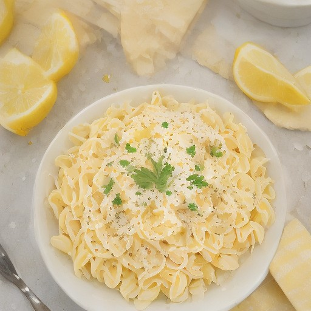

パスタ
明太子レモンクリーム生パスタ：悪魔のスパイスが奏でる鮮烈な美味しさ - カリッとした明太子と爽やかなレモンが融合したパスタの悪魔的アレンジレシピ！

明太子とレモンが融合した、悪魔的な美味しさを追求した、生パスタのレシピ。意外性のある組み合わせが、食欲をそそる一品に。
💡 こんな時・こんな人におすすめ！
parties , 週末 , おうちで楽しむ
📋 必要な材料（ポストイット風）
材料リスト 1
- 生パスタ適量
- 明太子100g
- レモン汁大さじ2
材料リスト 2
- クリームチーズ50g
- 塩少々
- こしょう少々
🍳 作り方ステップ
1
1. 明太子を細かく刻んで、ボウルに入れ、レモン汁を加え、塩こしょうで味を調える。
2
2. 生パスタを茹で、冷水で洗い、ザルで水気を切っておく。
3
3. ボウルにクリームチーズを入れ、泡立て器で混ぜる。
4
4. 生パスタをボウルに入れ、明太子とレモンクリームチーズを混ぜる。